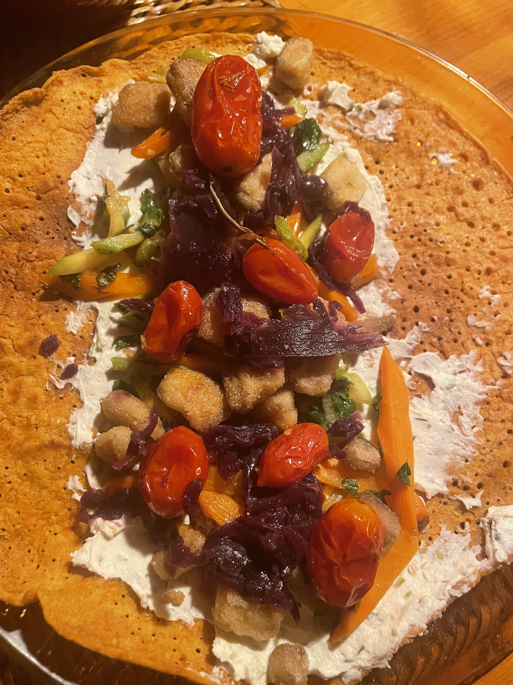

Crep de garbanzo con tofu, lombarda y tomates asados
Ingredients
2×
- 120 g de harina de garbanzo
- 250 ml de agua
- pizca de sal
- 200 g de tomates cherry
- 1 zanahoria
- 1 calabacín
- ¼ de lombarda
- 150 g de tofu
- aceite
- queso crema a las hierbas

Preparación
Paso 1
Mezclar 120 g de harina de garbanzo con 250 ml de agua y una pizca de sal, y dejar reposar 15min.
Paso 2
Asar 200 g de tomates cherry enteros 15min a 200ºC. Saltear 1 zanahoria y 1 calabacín en bastones, y rehogar ¼ de lombarda en tiras. Dorar 150 g de tofu en dados con aceite.
Paso 3
Hacer las crepes finas en una sartén caliente con un poco de aceite.
Paso 4
Untar cada crep con queso crema a las hierbas y rellenar con las verduras, el tofu y los tomates.